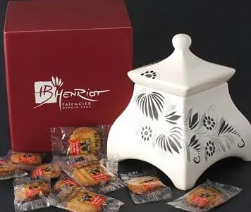
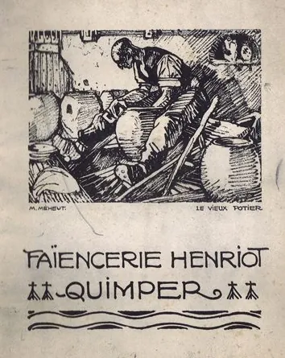
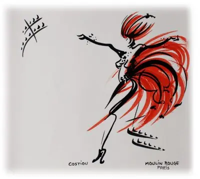
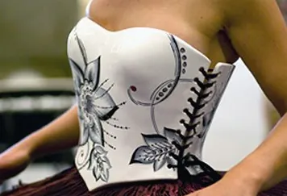
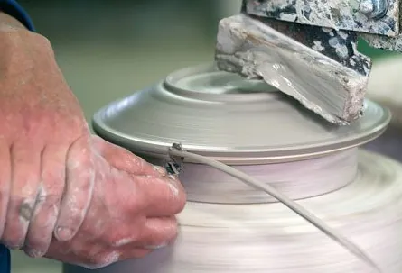
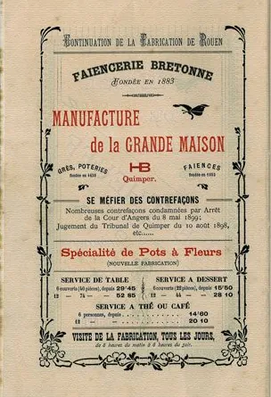
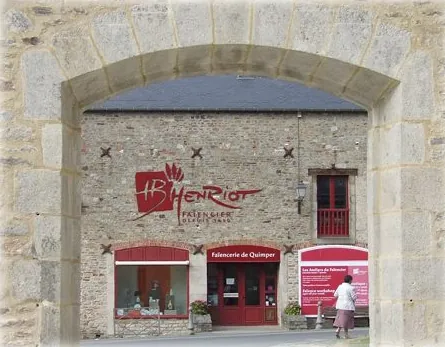
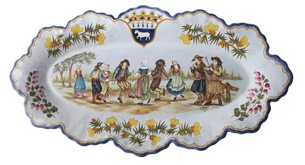

Max Jacob« Mille regrets »1 — 100
Quimper Enchères
9 rue Louis le Bourhis, 29000 Quimper
02 98 94 62 30
quimper-encheres@wanadoo.fr · quimper-encheres.com
Thierry-Lannon & Associés
26 rue du Château, 29200 Brest
02 98 44 78 44
info@thierry-lannon.com · thierry-lannon.com

Place Bérardier, quartier de Locmaria
29000 Quimper, France
02 98 90 09 36 · 02 98 52 22 52
contact@henriot-quimper.com
e-commerce@henriotboutique.com